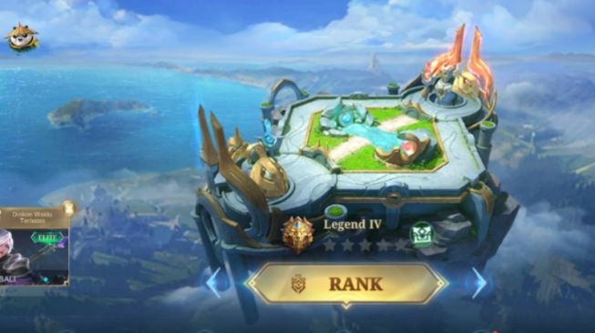
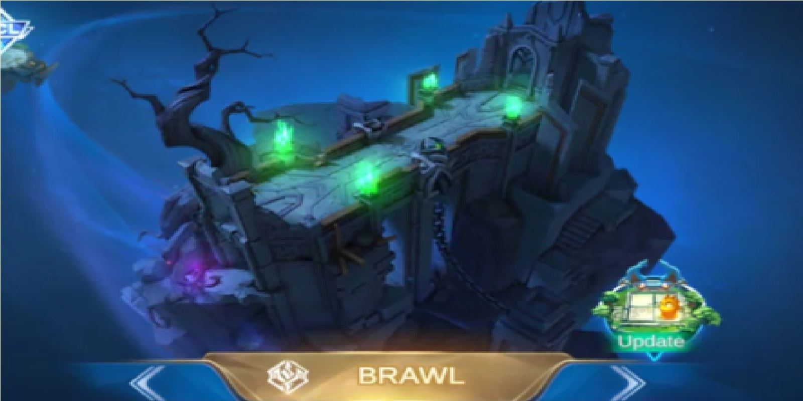

Equipment MLBB
| Name | Stats | Passive | Init. Cost |
|---|---|---|---|
| Sea Halberd | +70 Physical ATK; +25% Attack Speed | Life Drain: Upon dealing damage to the target, reduces Shield and HP Regen of the target by 50% for 3s. | 2050 c. |
| Blade Of Despair | +160 Physical ATK; +5% Movement SPD | Despair: Attacking enemy units that have HP below 50% will increase hero's Physical Attack by 25%. Lasts 2s. (Takes affect before damage is dealt) | 3010 c. |
| Lightning Truncheon | +75 Magic Power; +300 Mana; +10% CD Reduction | Resonate: Every 6s, the next skill echoes, dealing 20-1000 Magic Damage (scales with the hero's Max Mana) to up to 3 enemies | 2250 c. |
| Blood Wings | +500 HP; +150 Magic Power | Guard: Gain a Shield equal to 200% Magic Power. Gain another after 30s when it breaks. | 3000 c. |
| Dominance Ice | +70 Physical Defense; +500 Mana; +5% Movement SPD | +10% CD Reduction; Arctic Cold: Reduces the Shield and HP Regen of nearby enemy heroes by 50% (excluding those affected by "Life Drain"), and their Attack Speed by 30%. | 2010 c. |
| Athena's Shield | +900 HP; +2 HP Regen; +62 Magic Defense | Shield: Can be triggered when taking Magic Damage. Reduces Magic Damage taken by 25% for 5s (including the Magic Damage that triggers this effect). You will be able to trigger this effect again only after leaving combat for 10s. | 2150 c. |
| Demon Shoes | +6 Mana Regen; +40 Movement SPD | Mysticism: Eliminations of enemy heroes and assists regenerates hero’s mana by 10%, while eliminating minions regenerates 4% of the hero’s mana. | 720 c. |
| Warrior Boots | +22 Physical Defense; +40 Movement SPD | Valor: Physical Defense will be increased by 5 for 25s for each basic attack received, capped at 25 | 720 c. |
| Queen's Wings | +900 HP; +15 Physical ATK; +10% CD Reduction | Demonize: Reduces damage taken by 20% when health is less than 40% and increases your Spell Vamp by 35% for 5s. This effect has a cooldown of 60s. | 2250 c. |
| Oracle | +850 HP; +42 Magic Defense; +10% CD Reduction | Bless: Raise shield absorption and HP regen effect by 30%. | 2060 c. |
| Shadow Twinblades | +75 Magic Power; +15% Magic Lifesteal; +5% Movement SPD | Assassination: If no damage is taken or dealt within 5s, the next Basic Attack will deal extra Magic Damage equal to 200 plus 50% Magic Power, and inflict 60% slow effects upon the target for 1.5s. | 1960 c. |
| Demon Hunter Sword | +35 Physical ATK; +25% Attack Speed | Devour: Basic attacks will deal 9% of the target's current HP as additional physical damage (up to 60 against creeps and minions). Devour: Each Basic Attack grants 3% Physical Lifesteal for 3s. Stack up to 5 times. | 2180 c. |
Game Modes
-
Classic

Classic is the first and earliest game mode in Mobile Legends. All other game modes use the rules in Classic as a base. This mode gives 5v5 and the Mobile Legends experience without worrying about losing your Rank, but your win rate will be affected, both from the hero side and the whole.
-
Ranked
Ranked is a competitive queue for a game that is normally played. The rank system is used in matchmaking to ensure that all players played equally and fairly. Players earn or lose stars if they win or lose in this mode. Warrior, Elite, Master, Grandmaster, Epic, Legend, and Mythic (Mythical Glory) are the seven ranks in Mobile Legends: Bang Bang.
-
Brawl
In Brawl Mode you are unable to choose your heroes freely. Instead you will be given a choice between two random heroes in your inventory. This mode contains only one lane with two turrets defending the base in both teams respectively. Brawl matches usually end in a much shorter time compared to Classic Mode and Ranked. This type of match is best for raising lost credit scores due to reports and AFK behavior.